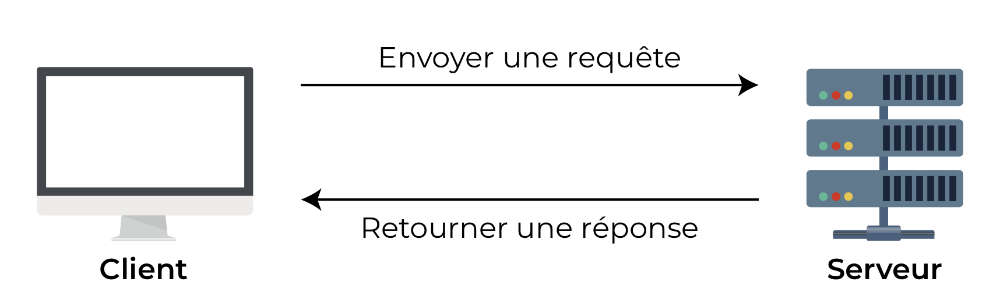
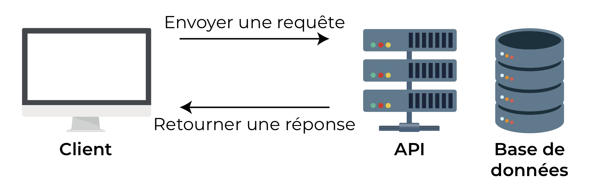

Prenons l’exemple d'Air France, une compagne aérienne française. Quelque part dans le monde, les serveurs d'Air France ont accès à toutes les données que vous voulez voir pour un trajet Paris-Lisbonne : les différents avions, les tarifs, les statuts des vols, etc. Pour que vous puissiez y avoir accès, votre navigateur (que l’on appelle le client) doit recevoir ces informations de quelqu’un.
Ce quelqu’un, c’est le serveur. L’application doit avoir une conversation avec le serveur.

Cela ressemble à ça :
-
Client : « Salut serveur, est-ce que je pourrais avoir un avion pour Lisbonne le 10 décembre ?» 🤔
-
Serveur : « Voilà, tous les transports disponibles vers Lisbonne le 10 décembre! » 🎉
Ou alors, si le serveur ne parvient pas à trouver les données, il pourrait répondre comme ceci :
-
Serveur : « Désolé, en fait il n’y a pas de vols disponibles le 10 décembre. » 🙁
C’est ce qu’on appelle la communication entre client et serveur : le client formule une requête (ou une demande) pour obtenir une information et le serveur envoie une réponse contenant les données demandées si cela est possible.
Et du coup, l’API, elle se place où, dans ce schéma ? Et le rapport avec Air France ? ✈️
En web, un service web et une API sont tous les deux des moyens de communication. Un service web standard facilite seulement la communication entre deux machines via un réseau. Une API facilite l’interaction entre deux applications différentes afin qu’elles puissent communiquer entre elles : elle sert d’intermédiaire. Le client va demander à l’API une information, celle-ci va aller chercher cette information dans la base de données puis la renvoyer au client dans un second temps.

Les API permettent la communication entre de nombreux composants différents de votre application, mais aussi entre des composants de votre application et d’autres développeurs. Elles agissent ainsi comme un intermédiaire qui transmet des messages à travers un système de requêtes et de réponses.